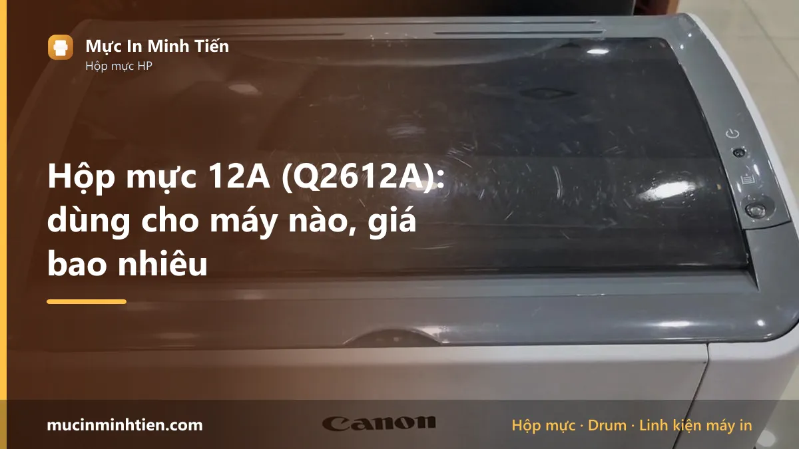
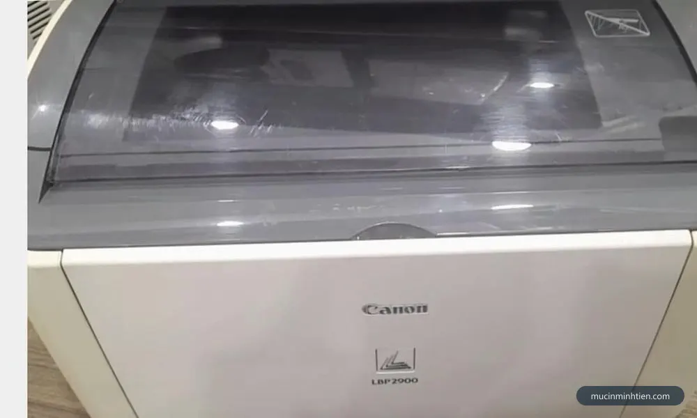
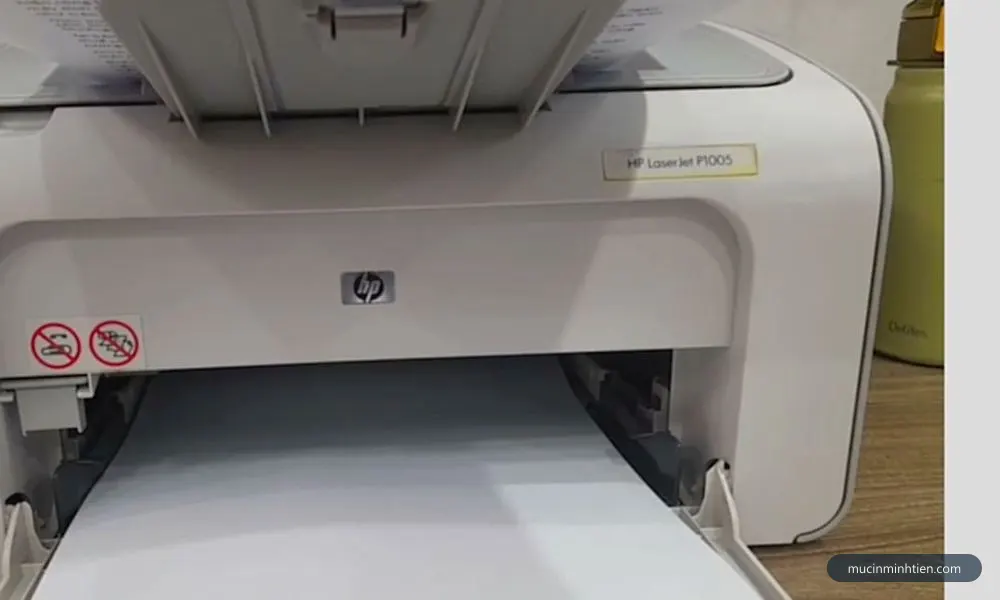
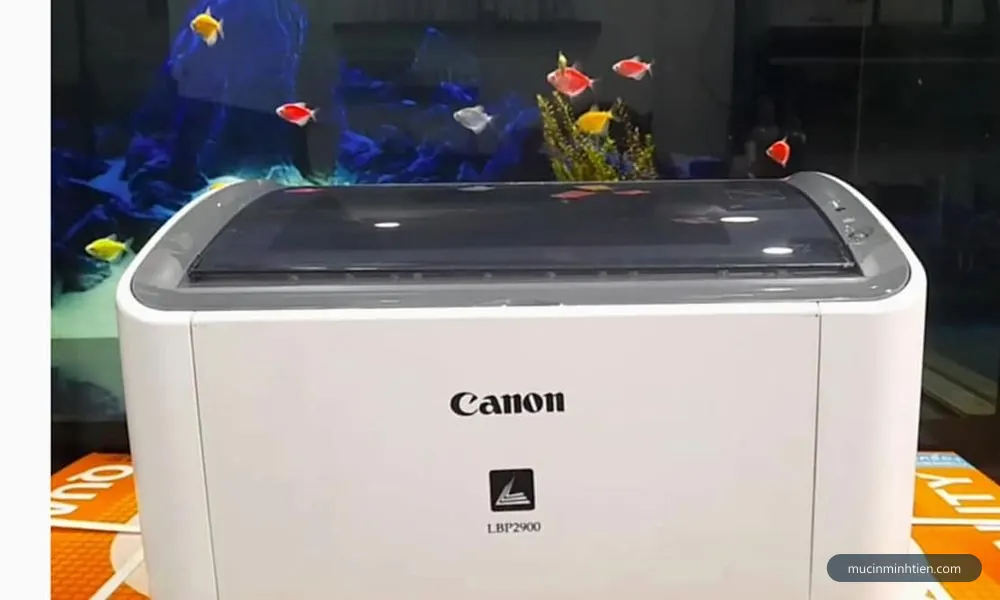
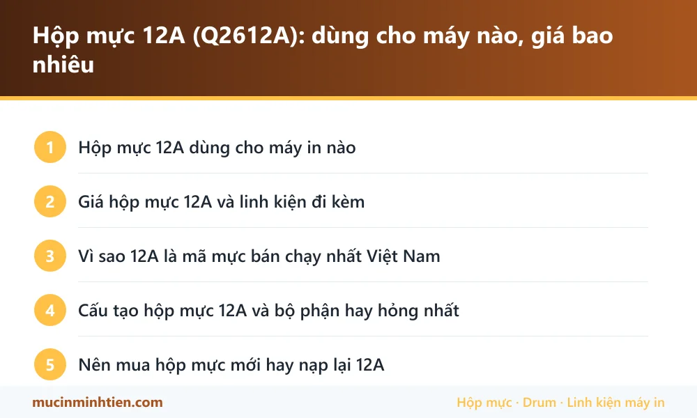

Hộp mực 12A (Q2612A): dùng cho máy nào, giá bao nhiêu

Hộp mực 12A (mã HP Q2612A) dùng cho HP LaserJet 1010, 1012, 1015, 1018, 1020, 1022, 3050, M1005 và các máy Canon LBP 2900, 3000 dưới tên EP-303. Một hộp đầy in được khoảng 2.000 trang văn bản.
Hộp mực 12A dùng cho máy in nào
| Dòng máy | Model cụ thể | Ghi chú |
|---|---|---|
| HP LaserJet | 1010, 1012, 1015, 1018, 1020, 1020 Plus, 1022, 1022n, 1022nw | Dòng máy in đen trắng để bàn, phổ biến nhất tại Việt Nam |
| HP LaserJet đa năng | 3015, 3020, 3030, 3050, 3052, 3055, M1005 MFP | Máy in kèm scan/copy |
| Canon LBP | 2900, 2900B, 3000 | Canon gọi là EP-303, cùng phôi với 12A nên dùng chéo được |
| Canon MF | 4010, 4120, 4150, 4270, 4350d, 4370dn | Canon gọi là FX-9 hoặc Cartridge 703 |

Giá hộp mực 12A và linh kiện đi kèm
Bảng dưới là hàng đang có tại kho 77 Bắc Hải, Phường Diên Hồng, TP.HCM, giá tham khảo cho khách lẻ. Đây là giá thật trong bảng giá công khai, không phải giá quảng cáo.
| Sản phẩm | Nhóm | Giá tham khảo |
|---|---|---|
| Combo 5 Drum 12A- FX9 HP1010- 1012- 1015-1018- 1020- 1022- 1022n- 1022nw-2900(TQ) - Drum 12A (TQ) | Drum / Trống máy in | 85.000 đ |
| Drum 12A Mitsu sử dụng cho hộp mực Canon 2900/3000/HP 1010/1012/1018(3 cây) - Drum 12(M) | Drum / Trống máy in | 111.000 đ |
| 5 cây Drum trống in Mitsu 12A-FX9 (Nhật) - Mitsu 12A-FX9 | Drum / Trống máy in | 185.000 đ |
| Combo 10 cặp (20 cái) Ron từ 12A / 15A - Ron từ 12 | Linh kiện khác | 10.000 đ |
| Bạc phíp 12A dùng cho máy Canon 2900 ( giá tính trên 1 cặp) - Bạc Phíp 12A | Linh kiện khác | 25.000 đ |
| Lò xo kéo 12A - Canon 2900 ( 10cái ) - lò xo kéo | Linh kiện khác | 30.000 đ |
| Chíp sử dụng cho máy in HP 108a/ MFP 136a/139pnw (W1110A/W1112A) - 2937_121223460 | Linh kiện khác | 35.000 đ |
| Combo 5 cây Trục sạc 12A-05A-80A-49A-53A (Sạc zin 1 nước ) - Sạc 12A | Linh kiện khác | 60.000 đ |
| Combo 5 cây Trục sạc/ truc cao su/ trục lăn HP 12A/15A/49A/53A/05A/80A ( Sạc Trung Quốc ) - Sạc 12A Trung Quốc | Linh kiện khác | 75.000 đ |
| Combo 10 cây Trục cao su máy in Canon 2900-Trục sạc 12A/49A/53A/05A/80A ( Sạc zin 1 nước ) - trục Sạc 12A | Linh kiện khác | 110.000 đ |
| Hộp scan , hộp quang Canon LBP 2900 / 12A - hộp Scan 2900 | Linh kiện khác | 300.000 đ |
| Nhông lô ép máy in Canon 2900-1010-1020-12A - Nhông lô ép 2900 | Lô sấy, lô ép & linh kiện sấy | 50.000 đ |
| Bao lụa 1320-2900-2035-400-401-2015-1200-05a-12a-136X - bao lụa 1200 | Lô sấy, lô ép & linh kiện sấy | 80.000 đ |
| Nhông trung gian HP 1010 - 1020 - Canon 2900 12A - Nhông sấy 1010 | Lô sấy, lô ép & linh kiện sấy | 80.000 đ |
| Combo 2 Bao lụa 12A (Bao sấy) Sử dụng cho máy in laser HP 1200 / 1010 / 1020 / 1160 / 1320 / P2014 / P2015 - Bao lụa 12A | Lô sấy, lô ép & linh kiện sấy | 99.000 đ |
| Rulo ép 12A HP R1010-1020-Canon 2900 - Lô ép 12A | Lô sấy, lô ép & linh kiện sấy | 100.000 đ |
| Chíp Sharp MX 312AT dùng cho máy photo sharp AR 5726/5731-M260N/M310N - Chíp sharp 312AT | Mực & linh kiện máy photocopy | 70.000 đ |
| Combo 2 Chíp reset hộp mực 79A(CF279A ) dùng cho máy in HP LaserJet PRO M12 / M12A, HP LaserJet PRO MFP M26A / M26NW - 79A | Hộp mực & mực in máy in | 50.000 đ |
| Mực In Laser 12A-1010-1012-1018 có lỗ đổ mực - Mực laser 12A | Hộp mực & mực in máy in | 118.000 đ |
| Hộp mực HP 12A (Q2612A) chính hãng — Minh Tiến | Hộp mực & mực in máy in | 150.000 đ |
| Hộp mực RT 12A dùng cho Máy In Canon 2900 / 1020/1010/M1005 - HP 1010, 1015, 1012, 3015, 3020, 3030, 1020 - RT 12A | Hộp mực & mực in máy in | 220.000 đ |
| Combo 2 TRỤC TỪ HP ( 12A ) 1010/1012/1015/1018/1020/3015/3050 – Canon 2900 - Trục từ 12A | Trục từ | 34.000 đ |
| Combo 5 cây Gạt nhỏ 12A-49A-53A-05A-80A - Gạt 12A(N) | Gạt mực | 40.000 đ |
| Gạt lớn+nhỏ 12A-canon 2900-5 cặp - Gạt lớn+nhỏ 12A | Gạt mực | 85.000 đ |
| Quả đào bánh xe cuốn giấy HP 12A/1020/Canon 2900/4350 - HP 1020 | Giấy in & Ruy băng | 25.000 đ |
| Load giấy 12A-1010-2900 , đệm tách giấy - Load giấy 12A | Giấy in & Ruy băng | 35.000 đ |
| Seal 12A-10 Cái - Seal 12A | Chip & Seal | 35.000 đ |
Không thấy mã cần tìm? Dùng công cụ tra cứu theo model máy hoặc xem bảng giá đầy đủ 773 mã.

Vì sao 12A là mã mực bán chạy nhất Việt Nam
Hai dòng máy dùng mã này — HP 1020 và Canon 2900 — là máy in văn phòng bán chạy nhất Việt Nam suốt hơn mười năm. Máy bền, ít hỏng vặt, linh kiện rẻ và có sẵn khắp nơi, nên tới giờ vẫn còn hàng chục nghìn máy đang chạy hằng ngày ở các văn phòng, tiệm photocopy và hộ gia đình.
Hệ quả là thị trường 12A rất phong phú: có hộp mực chính hãng, hộp mực tương thích của nhiều nhà sản xuất, hộp mực đã qua nạp lại, và đầy đủ linh kiện rời để thay từng bộ phận. Đây là mã hiếm hoi mà bạn gần như không bao giờ phải mua nguyên hộp mới nếu chỉ hỏng một chi tiết.
Cấu tạo hộp mực 12A và bộ phận hay hỏng nhất
Hộp mực 12A gồm sáu bộ phận chính, và mỗi bộ phận có tuổi thọ khác nhau — đây là lý do bản in xuống chất lượng theo những kiểu rất khác nhau:
- Trống từ (drum) — bộ phận đắt và quan trọng nhất. Xước drum gây sọc đen dọc lặp lại đều đặn trên trang.
- Gạt mực (wiper blade) — mòn hoặc mẻ thì mực không được gạt sạch, gây lem mực ở mép trang.
- Trục từ (magnetic roller) — mòn sau 3–4 lần nạp, bản in nhạt dần dù hộp còn đầy mực.
- Trục cao su (PCR) — chai cứng gây bóng chữ, in ra có vệt mờ lặp lại.
- Bạc phíp và lò xo — mòn gây kêu và lệch trục.
- Seal và ron từ — hở gây rơi mực vào lòng máy.
Nhìn bản in đoán được bộ phận nào hỏng: xem chi tiết ở bài máy in bị sọc đen dọc.

Nên mua hộp mực mới hay nạp lại 12A
Với 12A, nạp lại gần như luôn là phương án kinh tế hơn, vì linh kiện rời của mã này rẻ và có sẵn. Chi phí nạp mực tận nơi từ 80.000đ, trong khi hộp mực mới đắt hơn nhiều lần.
Nên nạp lại khi: vỏ hộp còn kín, drum chưa xước, gạt mực chưa mẻ, bản in trước khi hết mực vẫn sắc nét.
Nên thay linh kiện hoặc hộp mới khi: bản in có sọc đen dọc lặp lại (drum), lem mực ở mép (gạt), nhạt loang lổ dù vừa nạp (trục từ), hoặc vỏ hộp đã nứt làm rơi mực vào máy. Trường hợp này thay riêng bộ phận hỏng vẫn rẻ hơn mua nguyên hộp.

Câu hỏi thường gặp về hộp mực 12A
Hộp mực 12A và Canon 2900 có phải là một không?
Hộp mực 12A in được bao nhiêu trang?
Máy HP 1020 dùng được hộp mực của Canon 2900 không?
Nạp mực 12A giá bao nhiêu?
Vì sao hộp mực 12A mới nạp đã in mờ?
Bài viết liên quan
- Canon 2900 kéo nhiều tờ giấy cùng lúc: cách xử lý
- Canon 2900 không nhận hộp mực: 5 cách xử lý tại chỗ
- Máy in bị sọc đen dọc: 5 nguyên nhân và cách khắc phục
- Hộp mực 35A: dùng cho máy nào, giá bao nhiêu
- Hộp mực 85A: dùng cho máy nào, giá bao nhiêu
- Tra hộp mực và linh kiện theo model máy in
- Nạp mực máy in tận nơi TP.HCM từ 80.000đ